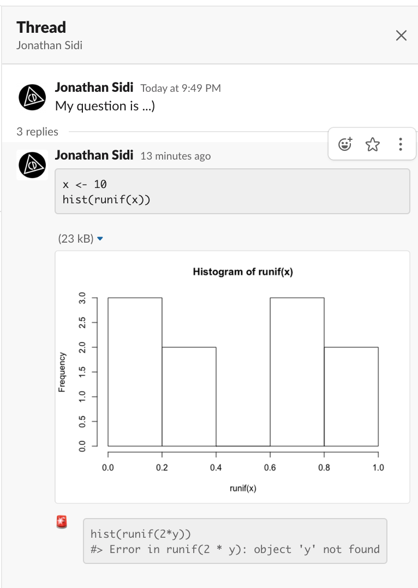
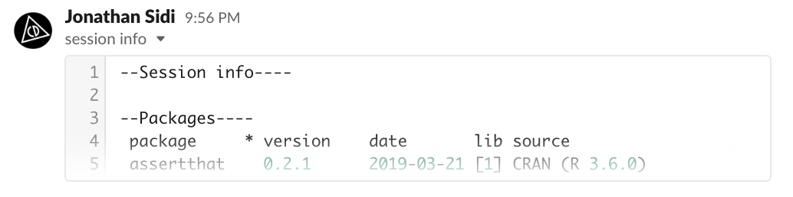

slackreprex is a part of slackverse
| slackcalls |
||
| slackthreads |
slackteams |
slackposts |
| slackblocks |
||
| slackreprex |
The goal of slackreprex is to post reprex outputs to Slack using slackblocks.
Installation
# install.packages("remotes")
remotes::install_github("yonicd/slackreprex")Setup
To set up the required Slack Token API to interact with Slack teams you are a part of you need to first install slackteams and follow the instructions on create an incoming webhook (don’t worry there is a button to press for this)
Once you finish this process you are ready to try out the following example!
Example
library(slackreprex)You can post a reprex to a public channel, a private channel, a direct message, or a group private message.
You can attach a message before the reprex with text that states your problem in your own words. The reprex itself will be automatically be placed in a thread so the channel won’t get too noisy and the help you receive is self contained in the original question.
The channel must be a valid Channel ID, this can be confusing to find, to help out you can use slackteams::validate_channel to find what the ID of the channel you want to post to.
slack_reprex({
x <- 10
hist(runif(x))
hist(runif(2*y))
},
text = 'My question is ...)',
channel = slackteams::validate_channel('yonicd')
)
Notice the little flashing siren emoji. Those pop up automatically when an error is found in the reprex chunk.
Threads
You can also post into an active thread. Click on the three vertical dots (‘more actions’) on the message you are responding to and select ‘Copy link’.

Use this link in the channel argument. That’s it…
slack_reprex({
x <- 10
hist(runif(x))
hist(runif(2*x))
},
text = 'My correction is ... ',
channel = 'https://rfordatascience.slack.com/archives/DM4KNRWBY/p1582253357008800')
Post sessioninfo
You can also post your session info. If you have sessioninfo installed then that will be used by default, if you don’t then sessionInfo() will be used. The output will be posted to the channel as a snippet as the output can be pretty long and it is simpler to manage in this form.
slackreprex::post_sessioninfo(slackteams::validate_channel('yonicd'))
Deleting a post
If you want to delete a post you can use the following script from slackposts, the posts you are creating in the session are being saved in an internal environment and you can access the information needed in post_last() to delete your last post.
slackposts::chat_delete(slackposts::post_last())